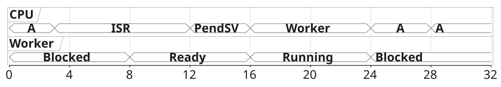

05 · Daten weitergeben und auf Ereignisse reagieren
Inter-Task-Kommunikation und Interruptanbindung
Ein FreeRTOS-Kernel auf dem Cortex-M4
Vom konsistenten Einzelwert zur begrenzten Nachrichtenfolge
Übung: Papiermodelle und NUCLEO-H755ZI-Q
Dieser Termin verbindet zwei bekannte Ideen: die Zustände eines Threads aus Vorlesung 3 und den Schutz gemeinsamer Daten aus Vorlesung 4. Inter-Task-Kommunikation bedeutet Datenaustausch zwischen Aufgaben eines Betriebssystemkerns. Ein Echtzeitbetriebssystem, englisch Real-Time Operating System oder RTOS, bietet dafür begrenzte Nachrichtenwarteschlangen. FreeRTOS ist der im Labor verwendete Kernel. Der Cortex-M4 ist einer der beiden Prozessorkerne des STM32H755 auf dem Board NUCLEO-H755ZI-Q.
Zuerst betrachten wir reine Softwareaufgaben. Danach wird ein Interruptbehandler zum Nachrichtenerzeuger. Beide Teile stellen dieselben Fragen: Welche Information muss erhalten bleiben, wer darf den Speicher benutzen und was geschieht bei fehlendem Platz? Das begleitende Skript erklärt die Voraussetzungen und Beispiele. Es setzt die Vorlesungen 1 bis 4 voraus, aber keine weitere Betriebssystemerfahrung. Eine lokale Queue wird heute innerhalb eines Kernels verwendet. Kommunikation mit dem zweiten Kern wird erst im folgenden Termin vertieft.
Was wir aus Vorlesung 1–4 mitbringen
Latenz und Deadline
Ereignis bis fertige Verarbeitung
Scheduling und Prioritäten
Wer nach einer Nachricht läuft
Ready, Running, Blocked
Warten auf Daten oder Platz
Mutex und Semaphor
Datenkonsistenz und Arbeitshinweis
Eine Deadline ist die Frist, bis zu der die geforderte Reaktion abgeschlossen sein muss. Latenz bezeichnet eine Verzögerung, deren Anfang und Ende immer angegeben werden müssen. Scheduling ist die Auswahl einer ausführungsbereiten Aufgabe. Ready heißt ausführungsbereit, Running heißt laufend und Blocked heißt auf ein Ereignis oder eine Wartezeit wartend. Diese Zustände beziehen sich auf Threads, also Aufgaben mit eigenem Ausführungskontext.
Ein Mutex schützt eine Ressource mit Besitzer: Alle beteiligten Threadzugriffe müssen dieselbe Schutzregel beachten. Ein Semaphor speichert dagegen eine begrenzte Anzahl von Berechtigungen oder Arbeitshinweisen. Er enthält selbst keine Nutzdaten. Diese Unterscheidung ist der Ausgangspunkt: Ein korrekt gesperrter Temperaturwert kann konsistent sein und trotzdem vier frühere Messungen verloren haben. Schutz eines Zugriffs und Speicherung einer Folge sind unterschiedliche Anforderungen. Die neue Warteschlange verbindet Datenspeicherung mit Warten und Aufwecken, ersetzt aber keine Analyse von Last und Fristen.
Was Sie am Ende begründen können
Historie und aktuellen Zustand unterscheiden
Einen Ringpuffer und seine Kapazität nachrechnen
Wertkopie und Speicherbesitz auseinanderhalten
Queue-Status und Wartezustände richtig auswerten
Eine zulässige Interruptübergabe konfigurieren
Historie meint hier eine Folge von Nachrichten, deren Zwischenwerte wichtig sind. Ein aktueller Zustand darf dagegen ältere Zustände ersetzen, wenn die Anwendung das ausdrücklich erlaubt. Ein Ringpuffer verwendet ein festes Array zyklisch; die nächsten Lese- und Schreibpositionen laufen am Ende wieder zum Anfang. Kapazität ist die Anzahl speicherbarer Elemente, nicht deren Größe in Byte.
Bei einer Wertkopie werden die Bytes einer Nachricht in den Queue-Speicher übernommen. Speicherbesitz beantwortet, wer einen referenzierten Puffer verändern oder wiederverwenden darf. Der Rückgabestatus eines Queue-Aufrufs entscheidet, ob die Übergabe tatsächlich gelungen ist. Bei der Interruptübergabe reicht ein kurzer Aufruf allein nicht: Funktion, Warteparameter und Interruptpriorität müssen passen. Diese Ziele werden mit konkreten Papieraufgaben geprüft. Eine gute Lösung begründet auch einen Fehlerfall, etwa eine volle Queue oder einen noch nicht abgeschlossenen Zugriff. Die Programmierübung macht die Verträge beobachtbar, ohne aus einem erfolgreichen Build automatisch eine gehaltene Frist abzuleiten.
Vier Schulstunden: erklären, rechnen, beobachten
1 · Queue-Grundlagen
25 Erklärung + 20 Papieraufgabe 1
2 · Last und Speicherbesitz
25 Erklärung + 20 Papieraufgaben 2–3
3 · Interruptübergabe
25 Erklärung + 10 Papieraufgabe 4 + 10 Integration
4 · Labor und Rückblick
25 Versuch + 15 Quiz + 5 Abschluss
Vier Schulstunden entsprechen hier insgesamt 180 Minuten Unterricht. Die Tabelle verteilt 75 Minuten auf Erklärungen, 50 Minuten auf Papieraufgaben, 35 Minuten auf Integration und Versuche sowie 20 Minuten auf Quiz und Abschluss. Pausen liegen außerhalb dieses Modells. Die etwa 50 Folien sind Gesprächs- und Arbeitsstationen; Rechen- und Laborfolien werden länger verwendet als Orientierungsfolien.
Der Zeitplan setzt für die Programmierphase ein bereits lauffähiges Projekt aus Vorlesung 3 voraus. Das Einrichten einer neuen Entwicklungsumgebung, die Fehlersuche im Dual-Core-Start und die erstmalige Installation der Werkzeuge passen nicht zusätzlich in die 35 Minuten. Die Lehrperson stellt daher eine geprüfte Projektbasis und die beiden Anwendungsdateien bereit. Ohne diese Basis werden die Papieraufgaben und eine gemeinsame Codebesprechung durchgeführt; fehlende Hardwarewerte werden nicht erfunden. Das Quiz dient der begründeten Rückmeldung, insbesondere zu häufigen Verwechslungen zwischen gespeichert, bereit und bereits verarbeitet.
Fünf Messungen, ein geschützter Wert
Messungen bei \(t=1,2,3,4,5\,\mathrm{ms}\) ; Leser erst danach.
Einzelwert mit Mutex
Messung 5
FIFO mit fünf freien Plätzen
Messungen 1 bis 5
Welche Ablage braucht ein Display, welche eine Ereignisstatistik?
Die Zeitpunkte sind didaktische Annahmen und keine Messung am Board. ms steht für Millisekunden. Der Schreiber ersetzt bei jedem Zeitpunkt denselben Einzelwert. Ein Mutex, eine Sperre mit Besitzer, kann dabei verhindern, dass der Leser einen halb aktualisierten Datensatz erhält. Er bewahrt jedoch keine früheren Datensätze. Beim späteren Lesen bleibt nur Messung 5.
FIFO bedeutet First In First Out: Die zuerst erfolgreich eingereihte Nachricht wird zuerst entnommen. Eine solche Warteschlange kann hier alle fünf Messungen erhalten, wenn anfangs fünf Plätze frei sind und keine Nachricht verworfen wird. Ein Display benötigt häufig den jüngsten gültigen Zustand. Eine Statistik über jede Betätigung braucht dagegen die Ereignisfolge oder eine passende Zählung. Beide Antworten hängen von der Anforderung ab. Man kann nicht aus dem Wort Sensor ableiten, dass Überschreiben immer zulässig wäre. Die Speicherwahl beginnt deshalb mit der Bedeutung der Daten, bevor eine konkrete Betriebssystemfunktion ausgewählt wird.
Eine Nachricht braucht einen Vertrag
Inhalt: Wert, Sequenznummer, Erfassungszeit
Reihenfolge: alle Ereignisse oder nur letzter Stand?
Kapazität: wie viele Nachrichten dürfen warten?
Fehlerpfad: was geschieht bei Überlauf?
Besitz: Kopie oder referenzierter Puffer?
Ein Vertrag beschreibt die Erwartungen zwischen Sender und Empfänger. Die Sequenznummer ist eine fortlaufende Kennzeichnung der vom Sender erfassten Nachrichten. Wird sie bei jedem Versuch erhöht, lassen spätere Lücken abgelehnte Übergaben erkennen. Sie beweist nicht, dass jedes physikalische Ereignis überhaupt einen Callback erreicht hat. Ein Zeitstempel hält einen definierten Erfassungszeitpunkt fest. Seine Zeitquelle und Einheit müssen dokumentiert werden; ein Kernel-Tick ist nicht automatisch eine Mikrosekunde.
Kapazität und Fehlerpfad gehören zusammen. Ein begrenzter Speicher kann nicht jede beliebige Last verlustfrei aufnehmen. Der Sender muss erkennen, ob sein Datensatz übernommen wurde. Bei einer Referenz, etwa einer Pufferadresse, ist außerdem festzulegen, wer den Inhalt nach der Übergabe verändern darf und wann er wieder verfügbar wird. Ein erfolgreicher Funktionsaufruf ersetzt diesen Besitzvertrag nicht. Wir beginnen mit kleinen Wertnachrichten, weil dort die Speicherlebensdauer übersichtlich ist. Erst danach übertragen wir dieselben Fragen auf große Puffer.
Producer und Consumer entkoppeln
Die Queue puffert zeitweise unterschiedliche Arbeitsgeschwindigkeiten.
%%{init: {'theme': 'base', 'htmlLabels': false, 'flowchart': {'htmlLabels': false}, 'themeVariables': {'background': '#FFFFFF', 'primaryColor': '#FFFFFF', 'primaryBorderColor': '#E5E5EA', 'primaryTextColor': '#1D1D1F', 'lineColor': '#86868B'}}}%%
flowchart TD
P[Producer] -->|Put: Kopie| Q[Queue: N Plätze]
Q -->|Get: Kopie| C[Consumer]
style Q fill:#FFFFFF,stroke:#E2001A,stroke-width:2px !important
Producer ist der Erzeuger einer Nachricht, Consumer ihr Verbraucher. Die Abbildung wird von oben nach unten gelesen. Der erste Pfeil steht für Put, also Einreihen; der zweite für Get, also Entnehmen. Die rote Umrandung hebt den begrenzten Zwischenspeicher hervor und bezeichnet keine zusätzliche Zeitgarantie. N ist die Kapazität in Elementen. Die Zeichnung zeigt einen Datenfluss, keinen zeitlichen Ablauf einer Präemption.
Bei kleinen Wertnachrichten erhält die Queue eine Kopie und gibt später eine Kopie an den Consumer weiter. Der Erzeuger muss seine lokale Nachricht nach erfolgreichem Put nicht bis zur Verarbeitung aufbewahren. Der Consumer kann arbeiten, obwohl der Erzeuger inzwischen andere Aufgaben erledigt. Diese Entkopplung ist begrenzt: Sobald alle Plätze belegt sind, braucht der Sender eine Warte- oder Verwerfungsregel. Eine dauerhaft langsamere Verarbeitung wird durch den Speicher nicht schneller. Die Queue verwaltet ihre eigenen Operationen nebenläufigkeitssicher; die Anwendung bleibt für die Bedeutung der Daten und die Last verantwortlich.
FIFO und zwei verschiedene Prioritäten
Im Labor: msg_prio = 0, Nachrichten in FIFO-Reihenfolge
CMSIS-RTOS2 spezifiziert Nachrichtenvorrang
Der betrachtete CMSIS-FreeRTOS-Adapter ignoriert msg_prio
Threadpriorität bestimmt die Auswahl laufender Aufgaben
Lokalen Adapter prüfen: cmsis_os2.c
FIFO steht für First In First Out und beschreibt die Reihenfolge erfolgreich eingereihter Nachrichten. CMSIS-RTOS2 ist die zweite Betriebssystem-Schnittstelle des Common Microcontroller Software Interface Standard. In dieser Spezifikation kann msg_prio einen Nachrichtenvorrang ausdrücken: Nachrichten höheren Vorrangs werden vor solchen niedrigeren Vorrangs angeordnet. Dieser Parameter ist nicht die Priorität des sendenden oder empfangenden Threads.
Der öffentlich eingesehene CMSIS-FreeRTOS-Adapter verwirft msg_prio bei Put und bietet diesen Vorrang nicht an. Der Laborcode übergibt deshalb null und arbeitet mit gewöhnlicher FIFO-Semantik. Eine hohe Threadpriorität kann einen Consumer früher laufen lassen, sortiert aber nicht rückwirkend seine Nachrichten. Das öffentliche Referenzprojekt und die im STM32Cube-Paket enthaltene Version können voneinander abweichen. Prüfen Sie die lokale Datei cmsis_os2.c, bevor Sie aus einer Spezifikationsfunktion auf das konkrete Verhalten schließen. Diese Versionsgrenze gehört zur technischen Begründung, sie ist keine zusätzliche Aufgabe zur Einführung in Queue-Grundlagen.
Ringpuffer: logische Folge, physische Plätze
Lehrkonvention für \(N=3\) : Indizes laufen modulo \(N\) .
Head: nächste Entnahme · Tail: nächstes Einfügen
Count: Zahl gültiger Elemente, nicht sichtbarer alter Bytes
%%{init: {'theme': 'base', 'htmlLabels': false, 'flowchart': {'htmlLabels': false}, 'themeVariables': {'background': '#FFFFFF', 'primaryColor': '#FFFFFF', 'primaryBorderColor': '#E5E5EA', 'primaryTextColor': '#1D1D1F', 'lineColor': '#86868B'}}}%%
flowchart LR
S0[Slot 0] --> S1[Slot 1]
S1 --> S2[Slot 2]
S2 --> S0
Ein Ringpuffer ist ein festes Array, das zyklisch benutzt wird. Die Abbildung zeigt die drei Slots, also Elementplätze. Die grauen Pfeile bezeichnen die Reihenfolge der Indexfortschaltung von null über eins und zwei zurück zu null, keine einzelnen Nachrichten oder Zeitdauern. N gleich drei bedeutet drei Plätze mit den Indizes null, eins und zwei. Head bezeichnet in unserer Lehrkonvention die nächste Entnahme, Tail das nächste Einfügen und Count die Zahl gültiger Elemente. Nach dem letzten Index folgt wieder null. Modulo N ist der Rest bei Division durch N; für den nächsten Index ergibt sich etwa aus zwei plus eins modulo drei der Wert null.
Die logische Nachrichtenfolge beginnt am Head und umfasst genau Count Elemente. Sie muss deshalb nicht in der physischen Reihenfolge des Arrays liegen. Nach einem Get können die bisherigen Bytes im nun freien Platz noch sichtbar sein. Sie sind trotzdem kein gültiges Queue-Element mehr. Der Kernel muss sie nicht für die Darstellung löschen. Reale Implementierungen dürfen andere interne Zeiger und Namen verwenden. Wir implementieren keinen eigenen nebenläufigen Ring, sondern verwenden dieses Modell zum Verständnis der Reihenfolge und Belegung.
Ein Ring in fünf Operationen
Start leer, \(N=3\) . Put 10, Put 20, Get, Put 30, Put 40.
Start
leer
0
0
0
Put 10
10
0
1
1
Put 20
10, 20
0
2
2
Get → 10
20
1
2
1
Put 30
20, 30
1
0
2
Put 40
20, 30, 40
1
1
3
Die Tabelle verwendet den Ring mit drei Elementplätzen und die zuvor definierte Lehrkonvention. Put reiht ein, Get entnimmt. Die Zahlen zehn bis vierzig sind Nachrichtenwerte, keine Speicheradressen oder Zeitangaben. Alle Operationen gelingen in diesem Ablauf. Put 10 schreibt Platz null, Put 20 Platz eins. Der erste Get liefert zehn und verschiebt Head auf eins. Platz null ist nun logisch frei.
Put 30 schreibt Platz zwei; Tail läuft auf null zurück. Put 40 schreibt den inzwischen freien Platz null. Das physische Array enthält deshalb zuletzt vierzig, zwanzig, dreißig. Die logische Entnahmefolge bleibt zwanzig, dreißig, vierzig, denn sie beginnt bei Head gleich eins. Count ist drei, der Ring ist voll. Die Tabelle zeigt, warum das Array allein nicht genügt, um Nachrichten in Reihenfolge zu lesen. Eine typische Fehlannahme beginnt beim physischen Index null und liest vierzig zuerst. Die Indizes und die gültige Belegung bestimmen gemeinsam den Inhalt.
Head gleich Tail: leer oder voll?
leer am Anfang
0
0
0
voll nach drei Puts
0
0
3
Gleiche Indizes reichen in diesem Modell nicht aus.
Papieraufgabe 1: weitere Puts und Gets nachvollziehen.
Head ist der nächste Entnahmeindex, Tail der nächste Einfügeindex und Count die Belegung. Bei N gleich drei läuft Tail nach drei erfolgreichen Puts wieder auf null. Head hat sich ohne Get nicht verändert. Damit sind beide Indizes wie im leeren Startzustand null, aber die Bedeutung ist anders: Count null heißt leer, Count drei heißt voll.
Ein Ring kann diese Unterscheidung anders kodieren, etwa durch ein zusätzliches Voll-Bit oder einen absichtlich unbenutzten Platz. Unsere Rechnungen verwenden ausdrücklich Count und alle drei nutzbaren Plätze. Man darf daher nicht heimlich auf eine andere Konvention wechseln. Bei vollem Ring wird der neue Try-Put, also Einfügen ohne Wartezeit, abgewiesen; Head, Tail und gültige Folge bleiben erhalten. Bei leerem Try-Get erhält der Leser keinen neuen Wert. Papieraufgabe 1 setzt dieses Modell fort und fordert nach jedem Schritt den vollständigen Zustand. Damit wird die abstrakte FIFO-Reihenfolge überprüfbar.
Warten auf Daten verändert den Threadzustand
Schematische Schritte: Get leer bei 1 · Put bei 3 · Auswahl bei 5.
Consumer ist der empfangende Thread. Die waagerechte Achse zeigt schematische Schritte, keine gemessenen Millisekunden. Running bedeutet laufend, Blocked wartend und Ready ausführungsbereit. Der Consumer ruft bei Schritt eins Get auf einer leeren Queue mit erlaubter Wartezeit auf. Der Kernel setzt ihn auf Blocked. Er führt in diesem Zustand keine eigene Pollingschleife aus.
Ein erfolgreicher Put bei Schritt drei kann den wartenden Consumer auf Ready setzen. Er läuft trotzdem erst bei Schritt fünf, wenn der Scheduler ihn auswählt. Der Abstand ist hier bewusst sichtbar: Ready ist kein Verarbeitungsbeginn. Nach Verarbeitung versucht er bei Schritt sechs erneut ein Get und wartet wieder. Tickbehandlung, andere Threads und Interrupts können während seiner Blockierung weiterlaufen. Ein Get mit Timeout null würde sofort einen Status zurückgeben, anstatt diesen Wartezustand einzugehen. Eine endliche Wartezeit kann auch ohne Nachricht ablaufen. Erst der erfolgreiche Rückgabestatus bestätigt, dass eine neue Nachricht im Zielobjekt angekommen ist.
Queue einmal anlegen und Handle prüfen
/* Nach dem vorhandenen osKernelInitialize(). */ ; = osMessageQueueNew( 4 , sizeof ( SensorMsg), NULL); if ( q == NULL) { (); /* darf hier nicht zurückkehren */ }
SensorMsg: fest vereinbarter NachrichtentypErst Queue, dann Threads, dann Kernelstart
Kein zweites Initialisieren im generierten Cube-Projekt
Der C-Ausschnitt zeigt die Anlage, nicht ein vollständiges Bootprogramm. CMSIS-RTOS2 ist die standardisierte Betriebssystem-Schnittstelle. osMessageQueueId_t ist ihr Queue-Handle, also ein Bezeichner des angelegten Objekts. osMessageQueueNew erhält vier Elementplätze, die mit sizeof ermittelte Bytegröße von SensorMsg und mit NULL keine zusätzlichen Attribute. SensorMsg muss zuvor als gemeinsamer Nachrichtentyp definiert sein. Die vier ist die Kapazität, nicht die Zahl erzeugter Threads.
Im betrachteten Adapter wird bei NULL-Attributen dynamisch Speicher reserviert. Ein NULL-Ergebnis kann an Speicher, Parametern, Aufrufkontext oder Konfiguration liegen. Damit darf kein Thread die Queue benutzen. Error_Handler bezeichnet den Fehlerpfad des generierten Projekts; er muss diesen Initialisierungsabbruch tatsächlich stoppen. Im Labor enthält die Hilfsfunktion zusätzlich eine Endlosschleife, falls der Handler unerwartet zurückkehrt. Das Cube-Projekt initialisiert und startet den Kernel bereits. Wir fügen nur die Objektanlage an der richtigen Stelle ein, statt den Startablauf zu duplizieren.
Put übergibt eine Kopie bei Erfolg
= { . sample = 70 u , . seq = 7 u }; = osMessageQueuePut( q, & msg, 0 u , 0 u ); if ( st == osOK) { /* Nachricht übernommen: msg darf wiederverwendet werden. */ } Volle Queue, Timeout 0: neue Nachricht bleibt draußen.
Timeout größer 0: Thread kann auf freien Platz warten.
Put bedeutet Einreihen. Im C-Code bezeichnet msg eine lokale Nachricht mit Messwert sample gleich siebzig und Sequenznummer seq gleich sieben. Die Adresse &msg ist die Quelle der Kopie. q muss ein gültiger Queue-Handle sein, dessen Elementgröße zu SensorMsg passt. Die erste null ist msg_prio, der Nachrichtenvorrang, der im betrachteten CMSIS-FreeRTOS-Adapter ignoriert wird. Die zweite null ist der Timeout in Kernel-Ticks, also die Wartezeit. osStatus_t ist der Typ des Rückgabestatus.
osOK bestätigt, dass die Bytes übernommen wurden. Erst danach darf der Sender aus dieser erfolgreichen Übergabe schließen, dass der Empfänger eine eigene Kopie erhalten kann. Eine volle Queue wird mit Timeout null nicht überschrieben. Der Aufruf meldet osErrorResource und lässt die gespeicherten Nachrichten stehen. Mit positiver Wartezeit kann ein Thread auf Platz warten; seine Quelldaten müssen bis zur Rückkehr gültig bleiben. Ein solcher Wartepfad ist für einen Interruptbehandler unzulässig. Im Labor werden erwartete Kapazitätsfehler von technischen Fehlern getrennt.
Get nur bei Erfolg als neue Nachricht nutzen
; = osMessageQueueGet( q, & msg, NULL, 50 u ); if ( st == osOK) { (& msg); } else if ( st == osErrorTimeout) { /* Keine neue Nachricht innerhalb von 50 Ticks. */ } Get gibt einen Queue-Platz frei, bevor die Verarbeitung fertig ist.
Get bedeutet Entnehmen. Der C-Ausschnitt ist Lehrcode: ProcessMessage steht für die hier nicht ausgeführte Anwendungsverarbeitung. q ist ein gültiger Queue-Handle, msg der passend große lokale Zielpuffer und NULL bedeutet, dass kein Nachrichtenvorrang zurückgegeben werden soll. Die Zahl fünfzig ist eine endliche Wartezeit in Kernel-Ticks, nicht automatisch in Millisekunden. osStatus_t bezeichnet den Status, osOK den erfolgreichen Empfang und osErrorTimeout den Ablauf dieser Wartezeit.
Die lokale Variable msg ist zunächst nicht als neuer gültiger Datensatz zu betrachten. Nur bei osOK darf ProcessMessage die empfangene Nachricht auswerten. Auch nach einem früheren Erfolg und einem späteren Timeout wäre der alte Inhalt keine neue Nachricht. Die Folie zeigt nicht sämtliche Fehlerpfade; Parameter- oder Kontextfehler gehören in eine eigene technische Diagnose. Sobald Get die Kopie entnimmt, ist der Queue-Platz frei. Der Consumer kann noch lange mit dieser Kopie beschäftigt sein. Für Kapazitätsrechnungen zählen deshalb Entnahmen und fertig verarbeitete Nachrichten an unterschiedlichen Grenzen.
Status auswerten, Momentaufnahmen richtig lesen
osOKKopie gelungen
osErrorResource, Timeout 0voll bei Put, leer bei Get
osErrorTimeoutendliche Wartezeit abgelaufen
anderer Fehler
technisches Problem prüfen
GetCount und GetSpace reservieren keinen Platz.
Die Tabelle bezieht sich auf gültige Queue-Aufrufe der CMSIS-RTOS2-Schnittstelle. osOK ist der Erfolgsstatus. osErrorResource meldet beim nicht wartenden Put fehlenden Platz und beim nicht wartenden Get fehlende Daten. osErrorTimeout ist das Ende eines erfolglosen Wartens mit endlichem Timeout. Ein ungültiger Handle, ein unzulässiger Kontext oder falsche Parameter dürfen nicht einfach als gewöhnlicher Nachrichtenverlust gezählt werden.
GetCount steht verkürzt für osMessageQueueGetCount, die aktuelle Belegung, und GetSpace für osMessageQueueGetSpace, die aktuell freien Plätze. Zwischen dieser Abfrage und dem nächsten Put kann ein anderer Thread oder ein erlaubter Interrupt denselben Platz belegen. Die Abfrage reserviert daher nichts. Ein Ablauf nach dem Muster „Platz gesehen, also Put kann nicht scheitern“ ist falsch. Der Status des tatsächlichen Put entscheidet. Die vollständige Laboranwendung trennt akzeptierte Nachrichten, kapazitätsbedingte Drops und technische Fehler. Ein Drop ist eine bewusst erkennbare verworfene Nachricht, noch keine vollständige Reaktion auf den Verlust.
Ein überprüfbares Modell für Dauerüberlast
Lehrannahmen, keine Boardmessung:
Queue anfangs leer, \(N=10\) , API-Zeit vernachlässigt
Put bei \(1,2,3,\ldots\,\mathrm{ms}\) , jeweils Wert \(t\)
Get bei \(5,10,15,20\,\mathrm{ms}\) , je ein Element
Zeitgleich: erst Put, dann Get
Voll: neue Nachricht verwerfen
\(\lambda=1000\,/\mathrm{s}\) und \(\mu=200\,/\mathrm{s}\)
N ist die Kapazität in Elementen, ms sind Millisekunden und API bedeutet Application Programming Interface, Programmierschnittstelle. Die Rechenzeit ihrer Operationen wird im Modell vernachlässigt. lambda ist die angebotene Nachrichtenrate und mu die mögliche Entnahmerate, jeweils in Nachrichten pro Sekunde. Ein Put pro Millisekunde entspricht tausend pro Sekunde; ein Get alle fünf Millisekunden entspricht zweihundert pro Sekunde.
Die Queue ist zu Beginn leer. Jeder Put versucht, den Wert seines Zeitpunkts einzureihen. Bei Vollbelegung wird dieser neue Wert verworfen. Bereits gespeicherte Werte bleiben erhalten. Bei gleichen Zeitpunkten gilt eine feste Reihenfolge: Put vor Get. Diese Zählkonvention beeinflusst die Belegungsspitze und den ersten Verlust. Der Consumer entnimmt bei jedem Get nur eine Nachricht. Ein Worker, der nach einer Pause die gesamte Queue leert, wäre ein anderes Modell. Die Annahmen erlauben eine genaue Handrechnung, stellen jedoch keinen Ablaufbeweis für osDelay auf realer Hardware dar.
Die Belegung steigt trotz regelmäßiger Gets
\(5\,\mathrm{ms}\) 4
\(10\,\mathrm{ms}\) 8
\(12\,\mathrm{ms}\) 10
\(20\,\mathrm{ms}\) 9
Erster Fehl-Put: \(13\,\mathrm{ms}\) .
Bis 20 ms: \(20=13+7\) Versuche, \(13=4+9\) Erfolge.
Die Tabelle setzt das Lehrmodell mit zehn Plätzen, anfangs leerer Queue, einem Put je Millisekunde und einem Get alle fünf Millisekunden fort. Einheiten sind Millisekunden und Nachrichten. Nach den ersten fünf Puts und einem Get sind vier Elemente vorhanden. Nach zehn Puts und zwei Gets sind es acht. Put elf und zwölf füllen die Queue vollständig. Der erste abgewiesene Versuch liegt daher bei dreizehn Millisekunden.
Die Werte dreizehn, vierzehn und fünfzehn werden verworfen. Erst der Get nach dem gescheiterten Put bei fünfzehn schafft einen Platz. Put sechzehn gelingt; siebzehn bis zwanzig scheitern wieder vor dem Get bei zwanzig. Insgesamt gibt es dreizehn erfolgreiche Puts und sieben Verluste. Vier Gets liefern eins, zwei, drei und vier; neun Elemente bleiben übrig. Die erste Bilanz zerlegt zwanzig Versuche in dreizehn Erfolge und sieben Fehler. Die zweite zerlegt dreizehn Erfolge in vier Entnahmen und neun Restnachrichten. Diese Bilanzen prüfen den Verlauf unabhängig von einzelnen Tabellenzeilen.
Kapazität aus der höchsten Zwischenbelegung
Für ein begrenztes, verlustfreies Referenzmodell:
\[N\ge\max_t\bigl(Q_0+A(t)-D(t)\bigr)\]
\(Q_0\) : Anfangsbelegung, \(A\) : angebotene Nachrichten\(D\) : Entnahmen, auch Zwischenstände berücksichtigenIm Modell bis 20 ms: \(20-3=17\) Plätze vor dem letzten Get
Ein endlicher Puffer löst dauerhafte \(\lambda>\mu\) nicht
N ist die erforderliche Kapazität in Elementen. Q null ist die Anfangsbelegung. A von t zählt angebotene Nachrichten bis zum betrachteten Zeitpunkt, D von t die Entnahmen im gedachten verlustfreien Referenzablauf. Der Ausdruck ist die Belegung, solange keine Nachricht abgewiesen wird. Das Maximum muss auch Zwischenstände nach einem Put und vor einem zeitgleichen Get erfassen. Man darf nicht nur die nach bereits eingetretenen Verlusten erfolgreichen Puts zählen: Das würde den benötigten Speicher unterschätzen.
Für die leere Startqueue im begrenzten Intervall von eins bis zwanzig Millisekunden sind unmittelbar nach Put zwanzig erst drei Gets erfolgt. Die Spitze beträgt zwanzig minus drei gleich siebzehn. Nach dem vierten Get bleiben sechzehn. Die erforderliche Kapazität ist also siebzehn und nicht sechzehn. lambda und mu bezeichnen angebotene Rate und Entnahmerate. Wenn dauerhaft mehr ankommt als entnommen werden kann, wächst der Referenzrückstau unbegrenzt. Die Formel liefert dann keine endliche Dauerlösung. Bursts, also kurzzeitige Nachrichtenhäufungen, können dagegen mit ausreichendem Speicher aufgefangen werden.
Bei Überlast eine bewusste Entscheidung treffen
Sender auf Platz warten lassen
die Quelle warten kann
neuen Datensatz verwerfen
Verlust erkannt und behandelt wird
älteren Zustand ersetzen
nur der neueste Stand benötigt wird
Fehler eskalieren
Verlust die Anforderung verletzt
Blockierter Softwarethread stoppt keine Hardwarequelle automatisch.
Überlast bedeutet, dass die angebotene Arbeit die verfügbare Verarbeitung oder den Speicher überfordert. Eine Warteentscheidung beim Producer, dem Softwareerzeuger, erzeugt Backpressure, also Gegendruck zur Quelle. Das kann sinnvoll sein, wenn eine Berechnung später fortgesetzt werden darf. Eine unabhängig weiterlaufende Hardwarequelle wartet deshalb aber nicht automatisch. ADC bedeutet Analog-Digital-Wandler, UART Universal Asynchronous Receiver/Transmitter, serielle Schnittstelle, und DMA Direct Memory Access, direkter Hardware-Speicherzugriff. Diese Quellen brauchen einen eigenen Fluss- und Puffervertrag.
Neue Datensätze zu verwerfen bewahrt die ältere Historie, hinterlässt jedoch Lücken. Ältere Zustände zu ersetzen priorisiert Aktualität und ist eine andere Semantik als FIFO, First In First Out. Eskalation bedeutet eine sichtbare Behandlung, etwa Abbruch eines Versuchs oder eine dokumentierte Fehleranzeige. Ein still erhöhtes Diagnosefeld allein erfüllt noch keine Sicherheits- oder Qualitätsanforderung. Papieraufgabe 2 verbindet die Lastrechnung mit der Auswahl einer solchen Regel, damit die Rechenzahl zu einer begründeten Entwurfsentscheidung führt.
Threadsichere Queue, trotzdem Anwendungsdeadlock
Producer hält Mutex A.
Volle Queue: Producer wartet im Put auf Platz.
Consumer braucht A, bevor er das nächste Get ausführt.
Producer wartet auf Consumer; Consumer wartet auf Producer.
Den Mutex vor dem blockierenden Put freigeben, wenn der Vertrag es erlaubt.
Producer ist der Nachrichtenerzeuger, Consumer der Empfänger, Put das Einreihen und Get das Entnehmen. Ein Mutex schützt eine Ressource und hält einen Besitzer fest. Im Beispiel besitzt der Producer Mutex A und versucht anschließend einen wartenden Put auf eine volle Queue. Er kann den Mutex erst nach erfolgreichem Put freigeben. Der Consumer versucht vor seiner nächsten Entnahme ebenfalls A zu erwerben. Weil A belegt ist, kann er nicht zum Get gelangen.
Damit entsteht ein Deadlock, eine Verklemmung durch einen geschlossenen Wartezyklus. Die Queue kann ihre internen Strukturen völlig korrekt schützen und trotzdem diesen Anwendungsfehler nicht verhindern. Auch die Prioritätsvererbung des Mutex erzeugt keinen freien Queue-Platz, wenn der Besitzer selbst blockiert ist. Ein geeigneter Entwurf kopiert die benötigten Daten im geschützten Abschnitt, gibt den Mutex frei und führt dann den möglicherweise blockierenden Put mit der privaten Kopie aus. Das gilt nur, wenn Inhalt und Lebensdauer der Kopie den Anwendungsvertrag erfüllen. Die bekannte Ressourcenanalyse aus Vorlesung 4 bleibt somit auch beim Datentransport notwendig.
Wertkopie entkoppelt lokale Nachrichten
= { . sample = 10 u , . seq = 1 u }; if ( osMessageQueuePut( q, & msg, 0 u , 0 u ) == osOK) { . sample = 99 u ; } Der Consumer erhält weiterhin sample = 10, sofern niemand die Queue verändert.
Queue-Slots speichern die festgelegte Elementgröße.
Der C-Code zeigt eine kleine Wertnachricht. sample ist der Nutzwert, seq die Sequenznummer und q ein gültiger Handle einer Queue mit der Elementgröße SensorMsg. Put kopiert bei osOK, dem Erfolgsstatus, die vereinbarten Bytes von &msg in den Queue-Speicher. Die spätere Änderung des lokalen Felds sample auf neunundneunzig verändert diese gespeicherte Kopie nicht. Ein späterer erfolgreicher Get kann daher weiterhin zehn empfangen.
Der Zusatz über Änderungen an der Queue grenzt den Ablauf ein: Ein anderer Consumer könnte die Nachricht entnommen oder eine zulässige Verwaltungsoperation den Inhalt verworfen haben. Wir betrachten hier einen unveränderten gespeicherten Datensatz. Die Kopie erfolgt byteweise entsprechend der Elementgröße. Felder mit Adressen sind deshalb keine tiefe Kopie der referenzierten Daten. Ein Strukturfeld namens buffer bleibt eine Adresse, wenn sein Typ ein Pointer ist. Für die kleine Nachricht mit reinen Zahlen reicht die lokale Lebensdauer während des Put-Aufrufs aus. Diese Eigenschaft macht Wertnachrichten zum geeigneten Einstieg, bevor große Datensätze einen zusätzlichen Besitzvertrag benötigen.
Eine Pointerkopie kopiert kein Bild
uint8_t * ptr = image_buffer; /* q_ptr wurde mit sizeof(ptr) angelegt. */ = osMessageQueuePut( q_ptr, & ptr, 0 u , 0 u );
Kopiert wird die Adresse, nicht der Bildinhalt
Puffer muss gültig und unverändert verfügbar bleiben
static verlängert die Lebensdauer, schützt aber nicht vor Überschreiben
Der C-Ausschnitt ist Lehrcode für einen Pointer, also eine Speicheradresse. uint8_t bezeichnet einen vorzeichenlosen Acht-Bit-Typ. image_buffer steht für einen tatsächlich bereitgestellten Bildpuffer, ptr für dessen Adresse. q_ptr muss mit sizeof(ptr), der Größe eines solchen Pointerwerts, angelegt worden sein. &ptr übergibt die Adresse des Pointerobjekts als Kopierquelle. Der Status st muss genauso wie bei anderen Puts geprüft werden.
Bei Erfolg wird nur die Adresse kopiert. Die Bytes des Bildes bleiben im externen Puffer. Der Consumer kann nur richtig lesen, wenn dieser Puffer noch existiert und der Producer, der Erzeuger, ihn nicht inzwischen verändert. Ein lokales Array einer beendeten Funktion ist kein geeigneter langfristiger Speicher. Ein static-Array lebt länger, kann aber weiterhin zu früh wiederbefüllt werden. Ebenso darf eine laufende Hardwareübertragung den Inhalt nicht gleichzeitig überschreiben. Copy by Reference wird als Kurzname für diesen Vertrag verwendet; technisch kopiert die Queue den Pointer weiterhin als Wert. Erst geregelter Besitz macht die kleine Adressnachricht sicher nutzbar.
Pufferbesitz im Kreislauf
Gescheiterter Put: Verantwortung bleibt beim Producer.
%%{init: {'theme': 'base', 'htmlLabels': false, 'flowchart': {'htmlLabels': false}, 'themeVariables': {'background': '#FFFFFF', 'primaryColor': '#FFFFFF', 'primaryBorderColor': '#E5E5EA', 'primaryTextColor': '#1D1D1F', 'lineColor': '#86868B'}}}%%
flowchart TD
F[FREE] -->|Producer nimmt| W[FILLING]
W -->|Put erfolgreich| Q[QUEUED]
Q -->|Consumer entnimmt| P[PROCESSING]
P -->|genau einmal zurück| F
style Q fill:#FFFFFF,stroke:#E2001A,stroke-width:2px !important
Die Abbildung beschreibt Zustände eines Datenpuffers, keine Threadzustände. Deshalb zeigt der Zustandskreislauf den Besitz und keine Präemption. FREE bedeutet verfügbar, FILLING vom Producer befüllt, QUEUED erfolgreich zur Consumerseite übergeben und PROCESSING vom Consumer verarbeitet. Die Pfeile werden von oben nach unten und dann zurück zum Anfang gelesen. Die rote Markierung hebt die erfolgreiche Übergabe hervor. Producer ist der Erzeuger, Consumer der Verbraucher und Put das Einreihen einer Adresse oder eines Deskriptors.
Eine Free-Pool-Struktur enthält verfügbare Pufferidentitäten; die Ready-Queue enthält übergebene Puffer. Bei erfolgreichem Put darf der Producer den Puffer nicht mehr verändern. Der Consumer gibt ihn nach abgeschlossener Nutzung genau einmal zurück. Bei fehlgeschlagenem Put bleibt der Producer verantwortlich und muss den Puffer behalten, später erneut übergeben oder einmal zurückgeben. Er darf nicht zugleich erneut einreihen und zurückgeben. Die tatsächliche Ausführung kann einen geweckten Consumer schon vor Rückkehr des Producer-Aufrufs starten lassen. Der Besitzvertrag muss darum am erfolgreichen Übergabepunkt gelten, nicht erst bei einer später geschriebenen Diagnosezeile.
Queue-Speicher und Payload-Pool getrennt zählen
Lehrannahmen: zehn Plätze, 4-Byte-Pointer, Bilder mit \(75\,\mathrm{KiB}\) .
zehn reine Pointer-Slots
40 Byte
zehn Bildpuffer
750 KiB
nur zwei Bildpuffer
150 KiB, höchstens zwei Bilder gleichzeitig
Kontrollblock, Alignment und Allokator kommen hinzu.
KiB bedeutet Kibibyte, also 1024 Byte. Die angenommenen Bilder enthalten je fünfundsiebzig KiB, die angenommenen Pointer jeweils vier Byte. Zehn Pointer-Slots brauchen damit zehn mal vier gleich vierzig Byte reinen Elementnutzspeicher. Zehn tatsächliche Bildpuffer brauchen zehn mal fünfundsiebzig gleich siebenhundertfünfzig KiB. Diese beiden Zahlen beschreiben verschiedene Speicherbereiche. Eine Queue mit zehn freien Pointerplätzen erzeugt keine zehn Bildpuffer.
Bei nur zwei Bildpuffern sind maximal zwei unabhängige Bilder gleichzeitig im gesamten Besitzkreislauf verfügbar: frei, beim Producer, in der Queue oder beim Consumer. Die Zahl wartender Queue-Adressen allein zählt nicht alle belegten Puffer. Kontrollblock, Alignment, also Speicherausrichtung, und Allokatorverwaltung erhöhen den Gesamtbedarf. Ein Deskriptor mit Pointer, Länge und Sequenz ist außerdem größer als ein reiner Pointer. Die Zahlen sind eine Modellrechnung, keine Behauptung über frei verfügbaren RAM des Boards. RAM bedeutet Random Access Memory, Arbeitsspeicher. Linker-Map, Speicherregion und konkrete Adapterforderungen bestimmen, ob der Entwurf im Zielprojekt tatsächlich passt.
Eine Queue der Länge eins ist noch keine Mailbox
Start leer, Sender bietet 10, 20, 30; kein Leser dazwischen.
FIFO mit drei Plätzen
10, 20, 30
Länge 1, Put mit Timeout 0
10; zwei Ablehnungen
Latest-Value mit Overwrite
30
„Mailbox“ meint hier ausdrücklich den jüngsten Zustand.
FIFO heißt First In First Out und bewahrt erfolgreich eingereihte Nachrichten in ihrer Reihenfolge. Latest-Value bedeutet jüngster Wert. Overwrite ist ein ausdrücklich erlaubtes Ersetzen eines noch ungelesenen älteren Zustands. Der Begriff Mailbox wird von Betriebssystemen unterschiedlich verwendet; in dieser Vorlesung bezeichnet er diesen Latest-Value-Vertrag.
Die Länge-1-Queue nimmt den ersten Wert zehn auf. Beide späteren Puts mit Timeout null werden bei Vollbelegung abgelehnt und lassen zehn stehen. Timeout null ist deshalb keine Näherung an Overwrite. Eine echte Overwrite-Operation ersetzt dagegen zunächst zehn durch zwanzig und danach durch dreißig. Im nativen FreeRTOS existiert xQueueOverwrite für eine Queue der Länge eins. CMSIS-RTOS2 bietet hier keine entsprechende standardisierte Queue-Overwrite-Funktion. Ein CMSIS-Handle wird nicht zu einem nativen Handle gecastet. Auch Get gefolgt von Put bildet gegenüber anderen Teilnehmern kein atomares Ersetzen. Wer beim Display nur Aktualität braucht, muss somit einen passenden Vertrag implementieren, statt lediglich die Kapazität auf eins zu setzen.
Aktuellen Zustand als geschützten Snapshot lesen
Ein Thread veröffentlicht Wert, Version und Zeitpunkt unter einem Mutex.
Leser kopiert denselben Datensatz unter demselben Mutex
Neue Version zeigt eine Änderung
Zwischenversionen dürfen verloren gehen
Benachrichtigung folgt auf Veröffentlichung
ISR verwendet keinen Mutex
Ein Snapshot ist eine zusammengehörige Momentaufnahme mehrerer Felder. Ein veröffentlichender Thread schreibt beispielsweise Wert, Versionsnummer und Zeitstempel in einem kurzen, durch Mutex geschützten Abschnitt. Ein Mutex ist eine Sperre mit Besitzer. Alle beteiligten Leser kopieren unter derselben Sperre den vollständigen Datensatz und geben die Sperre danach frei. So stimmen die Felder zusammen, sofern kein weiterer ungeschützter Teilnehmer schreibt.
Die Version kennzeichnet Änderungen. Sie beweist keine Zustellung aller Zwischenversionen. Ein Leser kann etwa direkt von Version eins auf fünf springen, wenn er später liest. Für einen aktuellen Zustand kann das erlaubt sein. Wenn eine Benachrichtigung verwendet wird, folgt sie auf die vollständige Veröffentlichung, damit der geweckte Leser nicht erst einen alten Stand findet. ISR steht für Interrupt Service Routine, Interruptbehandler. Er darf keinen CMSIS-Mutex erwerben oder freigeben. Bei hardwareerfassten Daten übergibt daher ein erlaubter kurzer Kanal die Rohdaten an den veröffentlichenden Thread. Diese Lösung baut auf Vorlesung 4 auf und bleibt heute ein Entwurfsmuster, kein zusätzliches Pflichtprogramm.
Mehrere Consumer: Arbeitsverteilung oder Zustellung?
Ein Get entnimmt eine Nachricht für einen Consumer
Zwei Get-Consumer bekommen nicht beide dieselbe Nachricht
Gemeinsamer Snapshot: mehrere Leser, möglicherweise verschiedene Versionen
Jeder Pflichtempfänger braucht einen eigenen Zustellvertrag
Beispiel: zwei eigene Queues, jeweils mit Überlaufregel.
Consumer bezeichnet einen Nachrichtenverbraucher und Get die Entnahme. Bei zwei Threads an derselben Queue wird jede Nachricht einmal entnommen. Welcher Consumer sie erhält, hängt vom Ablauf und den Kernel-Wartelisten ab. Das ist Arbeitsverteilung, etwa zwei Bearbeiter einer Auftragsfolge. Es ist kein Broadcast. Broadcast bedeutet Zustellung einer Nachricht an alle vorgesehenen Empfänger.
Ein Snapshot, eine konsistente gemeinsame Momentaufnahme, kann von mehreren Lesern kopiert werden. Sie lesen zu verschiedenen Zeitpunkten möglicherweise unterschiedliche Versionen. Gemeinsame Lesbarkeit bedeutet deshalb ebenfalls nicht, dass jeder alle Ereignisse bekommt. Für zwei Pflichtempfänger kann der Sender zwei getrennte Queues benutzen. Dann muss er aber jeden Put-Status getrennt behandeln. Erfolg an Queue A und Überlauf an Queue B wäre eine teilweise Zustellung, kein gemeinsamer Erfolg. Dieses Beispiel führt keinen vollständigen Bestätigungsmechanismus ein, sondern macht die Anforderung sichtbar. Bei der Papieraufgabe zu Historie und Zustand ist immer zuerst zu klären, ob Daten einmal bearbeitet, mehrfach gelesen oder zuverlässig an jeden Empfänger geliefert werden müssen.
Papierprüfung: die passende Aussage begründen
Head = Tail: genügt das als Leerbeweis?
Erfolgreicher Put: ist die Nachricht schon verarbeitet?
Zehn Pointerplätze: existieren damit zehn Bilder?
Zustand 30 gewünscht: liefert eine volle 1er-Try-Put-Queue ihn?
Antwort jeweils mit Voraussetzung oder Gegenbeispiel.
Diese Verständnisfragen verbinden die erste Hälfte. Head und Tail sind die nächsten Entnahme- und Einfügepositionen des Ringmodells. Sie können bei leerem und vollem Ring gleich sein; Count, die Belegung, entscheidet. Ein Put ist das Einreihen. Sein Erfolgsstatus bestätigt die Kopie, aber keine abgeschlossene Verarbeitung. Der Consumer, der Empfänger, kann noch Blocked oder Ready gewesen sein und muss erst ausgewählt werden.
Zehn Pointerplätze sind zehn speicherbare Adressen. Die tatsächlichen Bildpuffer werden separat angelegt und gezählt. Mit nur zwei Puffern existieren weiterhin nur zwei unabhängige Bilder. Try-Put meint Einfügen ohne Warten. Auf einer vollen Queue der Länge eins lehnt es den neuen Wert ab; der alte Wert bleibt. Nur ein expliziter Latest-Value-Vertrag, also Ersetzen durch den jüngsten Zustand, könnte dreißig liefern. Die begründeten Antworten sind wichtiger als vier Wörter wahr oder falsch. Dieselben Trennungen gelten im zweiten Teil, wenn ein Hardwareereignis statt eines Softwarethreads Daten erzeugt. Hinzu kommen dann die Aufrufregeln des Interruptkontexts.
Ein Interrupt ist kein zusätzlicher Thread
IRQ unterbricht die Ausführung auf diesem Kern
ISR erledigt die Interruptbehandlung
Ein höher dringlicher Interrupt kann die ISR unterbrechen
ISR darf nicht wie ein Thread auf Daten oder Platz blockieren
Zweiter Kern und Hardware können weiterarbeiten
IRQ steht für Interrupt Request, Interruptanforderung. ISR steht für Interrupt Service Routine, Interruptbehandler. Ein Hardwareereignis kann den laufenden Thread auf demselben Kern unterbrechen und den Behandler ausführen lassen. Der Behandler ist dabei kein weiterer Thread mit eigenem wartenden Betriebssystemkontext. Die Threads werden durch den Interrupt nicht einfach alle auf den Zustand Blocked gesetzt.
Eine höher dringliche Interruptquelle kann je nach Prioritäten und Maskierung auch eine ISR unterbrechen. Ein Thread mit hoher Betriebssystempriorität verdrängt dagegen keine noch aktive Hardware-ISR. Der zweite Kern und DMA, Direct Memory Access oder direkter Hardware-Speicherzugriff, können unabhängig weiterarbeiten. Eine lange ISR verzögert Threadfortschritt und möglicherweise andere Interruptbehandlungen. Daraus folgt die Beschränkung auf die sofort notwendige Arbeit. Der Behandler kann nicht auf eine volle Queue warten, bis ein Thread endlich einen Platz entnimmt: Dieser Thread müsste auf demselben Kern erst wieder laufen können. Das aufgeschobene Verarbeitungsmuster trennt diese beiden Verantwortlichkeiten.
Top-Half sichert, Bottom-Half verarbeitet
Deferred Interrupt Processing: aufschiebbare Arbeit in einen Thread verlagern.
%%{init: {'theme': 'base', 'htmlLabels': false, 'flowchart': {'htmlLabels': false}, 'themeVariables': {'background': '#FFFFFF', 'primaryColor': '#FFFFFF', 'primaryBorderColor': '#E5E5EA', 'primaryTextColor': '#1D1D1F', 'lineColor': '#86868B'}}}%%
flowchart TD
E[Ereignis] --> T[Top-Half]
T -->|nicht wartende Übergabe| Q[Queue oder Signal]
Q --> B[Bottom-Half]
style T fill:#FFFFFF,stroke:#E2001A,stroke-width:2px !important
Deferred Interrupt Processing bedeutet aufgeschobene Interruptverarbeitung. Die Top-Half, obere Hälfte, ist der unmittelbar ausgeführte Behandler. Die Bottom-Half, untere Hälfte, ist ein Worker, also ein verarbeitender Thread. Die Abbildung wird von oben nach unten gelesen. Der rote Rahmen hebt die sofort notwendige Hardwarearbeit hervor. Die Pfeile beschreiben Daten- und Signalübergabe; die Zeichnung ist kein zeitlich maßstäbliches Schedulingdiagramm.
Die Top-Half quittiert das Ereignis nach dem Gerätevertrag und sichert die Daten, die sonst verloren gehen könnten. Quittieren bedeutet, die erkannte Anforderung im vorgesehenen Hardwarepfad zu bestätigen. Die Reihenfolge von Datenlesen und Flagbehandlung ist gerätespezifisch. Die nicht wartende Übergabe speichert entweder kleine Rohdaten in einer Queue oder meldet vorhandene Arbeit. Die Bottom-Half führt Berechnungen und erlaubtes Warten aus. Deren Priorität folgt den Fristen und der Last; sie ist nicht automatisch maximal. Das Auslagern verkürzt den unmittelbar belegten Interruptpfad, beseitigt aber weder den Kapazitätsbedarf noch die Gesamtzeit bis zum Ergebnis.
Was in der ISR sofort nötig ist
Bedrohte Rohdaten sichern
Hardwareflag nach Gerätevertrag behandeln
Kleinen Datensatz oder Arbeitshinweis übergeben
Status prüfen und knappe Diagnose führen
Keine lange Rechnung, kein printf, kein Mutex, kein blockierendes Warten.
ISR bedeutet Interrupt Service Routine, Interruptbehandler. Rohdaten sind hier der noch nicht vollständig ausgewertete Eingang, etwa ein Registerwert oder die Kennzeichnung eines abgeschlossenen Puffers. Würde die Hardware ein Register vor dem Workerstart überschreiben, reicht bloßes Aufwecken nicht aus. Die Daten müssen rechtzeitig kopiert oder in einem gültigen Hardwarepuffer erhalten werden.
printf ist die formatierte C-Ausgabe. Sie kann umfangreiche Bibliotheks-, Geräte- und Synchronisationsarbeit auslösen und ist deshalb kein geeigneter kurzer Diagnosepfad im Behandler. Ein Mutex ist eine Besitzsperre; seine CMSIS-Aufrufe sind im Interruptkontext unzulässig. Blockierendes Warten kann den Thread, der Fortschritt ermöglichen müsste, am Laufen hindern. Eine kurze Übergabe bleibt trotzdem endlich: Der Rückgabestatus kann fehlenden Platz melden. Diagnosezähler brauchen eindeutige Schreiber. Ein volatile-Zähler, den ISR und Thread beide mit ++ ändern, wird durch volatile nicht nebenläufigkeitssicher. Falsche API-Nutzung kann zu Fehlerstatus, Assertion, Inkonsistenz oder Stillstand führen; ein bestimmter Hardware-Fault ist kein universell garantierter Ausgang.
Token oder Nachricht: was soll erhalten bleiben?
„Arbeit ist vorhanden“
leerer binärer Semaphor
jedes erfasste Ereignis mit Daten
Queue, Timeout 0, Überlaufregel
jüngster Zustand
expliziter Snapshot- oder Overwrite-Vertrag
Drei Releases ohne Acquire, Maximum 1: ein gespeichertes Token.
Ein Semaphor ist ein begrenzter Zähler von Berechtigungen oder Hinweisen. Ein binärer Semaphor erlaubt höchstens ein Token und beginnt für Ereignissignalisierung leer. Release stellt ein Token bereit, Acquire verbraucht es. Bei drei Releases ohne dazwischenliegendes Acquire gelingt im anfangs leeren Semaphor mit Maximum eins nur der erste; die anderen melden fehlende Kapazität. Ein späterer Worker kann deshalb höchstens einen gespeicherten Hinweis erhalten.
Eine Queue ist eine begrenzte Nachrichtenwarteschlange. Ein Put mit Timeout null kann kleine Daten aus einer erlaubten ISR übernehmen, meldet bei Vollbelegung aber ebenfalls einen Fehler. ISR heißt Interrupt Service Routine, Interruptbehandler. „Jedes Ereignis“ beschreibt die Anforderung, nicht die unbegrenzte Leistungsfähigkeit des Kanals. Ein Snapshot ist eine konsistente Momentaufnahme, Overwrite ein ausdrücklich erlaubtes Ersetzen. Diese Mittel eignen sich für den jüngsten Zustand, brauchen jedoch weiterhin einen sicheren Veröffentlichungsweg. Ein Token enthält keine Messbytes. Wenn der Worker nur geweckt wird und das ursprüngliche Register inzwischen einen neuen Wert trägt, ist die frühere Messung bereits verloren.
Drei Bedingungen für einen ISR-Aufruf
Funktion im Interruptkontext zugelassen?
Parameter ohne blockierendes Warten?
Interruptpriorität für Kernelaufrufe zulässig?
Queue Put/Get, Semaphor Acquire
nur Timeout 0
Semaphor Release
erlaubt bei passendem Kontext
Mutex Acquire/Release
unzulässig
ISR steht für Interrupt Service Routine, Interruptbehandler. CMSIS-RTOS2 ist die Betriebssystem-Schnittstelle des Common Microcontroller Software Interface Standard in Version zwei. Die Tabelle nennt deren grundlegende Kontextverträge. Queue Put und Get bedeuten Einreihen und Entnehmen. Semaphor Acquire und Release verbrauchen und erzeugen ein Token. Ein Mutex ist eine Besitzsperre und darf über diese Schnittstelle nicht aus dem Behandler erworben oder freigegeben werden.
Alle drei Fragen müssen positiv beantwortet werden. Timeout null erfüllt nur die zweite. So bleibt osMutexAcquire mit null trotzdem verboten. Die Interruptpriorität ist eine zusätzliche Anforderung des konkreten FreeRTOS-Ports. Ein erlaubter Name und nicht wartende Parameter helfen nicht, wenn der aufrufende Interrupt außerhalb dieses Bereichs liegt. Auch das Anlegen, Zurücksetzen oder Löschen einer Queue gehört nicht in diesen Callback. Die Tabelle ist keine vollständige Liste aller Funktionen. Prüfen Sie bei weiteren APIs deren dokumentierten Kontext, anstatt aus einem ähnlichen Namen automatisch auf Zulässigkeit zu schließen. Nun müssen wir die Hardwarepriorität von der bereits bekannten Threadpriorität trennen.
Zwei Prioritätsskalen mit verschiedener Richtung
CMSIS-Threadpriorität
höherer Wert: höherer Threadvorrang
logische NVIC-Priorität
kleinere Zahl: höhere IRQ-Dringlichkeit
Ein Worker mit osPriorityHigh repariert keine unzulässige IRQ-Priorität.
Interruptgruppierung und implementierte Bits am Projekt prüfen.
CMSIS bedeutet Common Microcontroller Software Interface Standard; osPriorityHigh ist eine hohe Threadpriorität seiner Betriebssystem-Schnittstelle. Threadpriorität bestimmt, welche ausführungsbereite Aufgabe der Scheduler auswählt. NVIC steht für Nested Vectored Interrupt Controller, den verschachtelten Interruptcontroller des Cortex-M. IRQ bedeutet Interrupt Request, Interruptanforderung. Die logische NVIC-Priorität hat die umgekehrte Zahlenrichtung: Null ist besonders dringlich, größere Zahlen weniger dringlich.
FreeRTOS schützt bestimmte Kerneloperationen durch Maskierung eines Interruptbereichs. Interrupts, die darüber besonders dringlich bleiben, dürfen diese Kerneloperationen nicht selbst aufrufen. Ein Worker kann beliebig hoch unter den Threads stehen und diese Hardwaregrenze trotzdem nicht verändern. Die implementierte Bitzahl begrenzt die verfügbaren logischen Werte. Die Gruppierung legt fest, wie die Bits für Präemption und Unterprioritäten benutzt werden. Diese Einstellungen stammen aus dem tatsächlich verwendeten Projekt und Port. Im nächsten Zahlenbeispiel sind sie ausdrücklich vorgegeben, damit die Rechenaufgabe nicht als allgemeine Boardkonfiguration missverstanden wird.
Beispiel: vier Bits und logische Grenze fünf
Nur unter diesen Lehrannahmen und passender Gruppierung:
0–4
unzulässig
5–15
erlaubte Funktionen, ohne Warten
Registergrenze: \(5\cdot2^{8-4}=80=\mathrm{0x50}\) .
HAL/CMSIS-Prioritätssetter erhalten den logischen Wert 5.
NVIC ist der Nested Vectored Interrupt Controller, der Interruptcontroller. IRQ bedeutet Interrupt Request. API heißt Application Programming Interface, Programmierschnittstelle, HAL Hardware Abstraction Layer, Hardwareabstraktion, und CMSIS Common Microcontroller Software Interface Standard. Im Lehrbeispiel sind vier Prioritätsbits implementiert und so gruppiert, dass die FreeRTOS-Portforderungen erfüllt sind. Eine kleinere logische Zahl bedeutet höhere Dringlichkeit.
Die logische Kernelaufrufgrenze beträgt fünf. Werte null bis vier liegen oberhalb ihrer Dringlichkeit und dürfen keine Kernel-API aufrufen. Fünf bis fünfzehn dürfen nur die dort erlaubten nicht wartenden Funktionen benutzen. Im Acht-Bit-Prioritätsregister werden die vier Bits nach oben ausgerichtet. Deshalb wird fünf mit zwei hoch vier multipliziert: achtzig dezimal oder 0x50 hexadezimal. configLIBRARY_MAX_SYSCALL_INTERRUPT_PRIORITY bezeichnet in üblichen Cube-Konfigurationen die unverschobene Grenze; configMAX_SYSCALL_INTERRUPT_PRIORITY den Registerwert. Die konkrete Definition wird am Projekt geprüft. 0x50 wird nicht als logische Cube-Eingabe verwendet. Ebenso ist fünf keine universelle Anweisung für jedes STM32-Projekt.
Der CMSIS-Adapter unterscheidet Aufrufkontexte
osMessageQueuePut aus Thread oder erlaubter ISR:
Adapter erkennt Handlerkontext
Threadpfad: native wartende oder sofortige Queue-Funktion
ISR-Pfad: native FromISR-Funktion, Timeout 0
Adapter fordert erforderlichen Kontextwechsel an
Im CMSIS-Labor kein zusätzliches manuelles Yield.
CMSIS-RTOS2 ist die standardisierte Betriebssystem-Schnittstelle. Der Adapter bildet sie auf native FreeRTOS-Funktionen ab. ISR heißt Interrupt Service Routine, Interruptbehandler. Im eingesehenen Cortex-M-Pfad wird der Handlerkontext über das IPSR, Interrupt Program Status Register oder Interruptprogrammstatusregister, und gegebenenfalls weitere Portprüfungen erkannt. Thread Mode hat keine aktive Exceptionnummer; Handler Mode bezeichnet den Ausnahmebehandlungskontext.
Bei osMessageQueuePut aus einer erlaubten ISR verlangt der Adapter Timeout null und ruft die native Queue-FromISR-Funktion auf. FromISR kennzeichnet die für diesen Kontext vorgesehene Variante. Ein erfolgreiches Einreihen kann einen höher priorisierten wartenden Thread bereit machen; der Adapter fordert dann den nötigen Wechsel an. Diese Kontextentscheidung ersetzt weder die Prioritätsprüfung noch das Funktionsverbot für Mutex-Aufrufe. Ein CMSIS-Mutex wird dadurch nicht ISR-fähig. Das Labor benutzt ausschließlich CMSIS-Aufrufe, deshalb kommt kein zweites manuelles Yield, also Wechselanforderung, hinzu. Die lokale cmsis_os2.c muss den beschriebenen Vertrag tatsächlich implementieren.
Native ISR-API: Status und Wechselbedarf getrennt
/* Vergleichscode für ein eigenes natives FreeRTOS-Objekt. */ = pdFALSE; = xQueueSendFromISR( native_q, & msg, & higher_woken); /* ok prüfen: erfolgreich oder voll. */ ( higher_woken); Im Labor bleiben Objekte und Aufrufe bei CMSIS-RTOS2.
Der C-Ausschnitt ist Vergleichscode und kein zusätzlich einzubauender Laborpfad. ISR steht für Interrupt Service Routine, Interruptbehandler. native_q ist ein tatsächlich mit der nativen FreeRTOS-API angelegtes Queue-Objekt, msg die passende Nachricht und BaseType_t der native Porttyp für Status und Flag. pdFALSE bedeutet falsch. xQueueSendFromISR reiht ohne blockierendes Warten ein und kann higher_woken auf wahr setzen, wenn eine höher priorisierte Aufgabe geweckt wird.
ok meldet den Übergabeerfolg und ist von higher_woken zu unterscheiden. Eine erfolgreiche Nachricht muss nicht immer einen Wechsel erfordern, etwa wenn der Consumer nicht wartet oder niedriger priorisiert ist. Bei mehreren nativen Übergaben im selben Handler wird das einmal initialisierte Wake-Flag nicht zwischendurch wieder auf falsch gesetzt. portYIELD_FROM_ISR fordert anschließend den passenden Kontextwechsel an; es lässt keinen Thread mitten im fortgesetzten Handlercode laufen. Ohne erforderliches Yield kann der Start bis zu einem späteren Schedulinganlass verzögert werden, nicht zwingend bis zum nächsten Tick. CMSIS-Handles werden nicht in native Handles umgewandelt.
Ready wird erst nach der ISR zu Running

Synthetische Zeitachse in µs; Ereignis bei 0, Workerstart bei 16.
CPU steht für Central Processing Unit, Prozessor. ISR bedeutet Interrupt Service Routine, Interruptbehandler. Der Worker ist der verarbeitende Thread. PendSV bezeichnet die ausstehend schaltbare Systemexception, über die der übliche Cortex-M-FreeRTOS-Port den Kontextwechsel ausführt. Die obere Spur zeigt die Prozessorbelegung, die untere den Workerzustand. A bezeichnet die zuvor laufende Aufgabe Thread A. Die waagerechte Achse zählt Mikrosekunden, µs. Alle Zeitpunkte sind didaktische Annahmen.
Ein Ereignis tritt bei null auf. Thread A läuft noch bis zum angenommenen ISR-Eintritt bei drei. Der Worker wartet zunächst Blocked. Der Übergabeaufruf macht ihn bei acht Ready, also ausführungsbereit. Die ISR führt ihren Rest bis zwölf zu Ende. Danach beansprucht der angenommene Übergang mit PendSV vier Mikrosekunden. Bei sechzehn wird der Worker Running und arbeitet bis vierundzwanzig, bevor er wieder wartet. Ein hoher Threadvorrang unterbricht die noch aktive ISR nicht. Der verlängerte rechte Rand nach vierundzwanzig macht den abschließenden Wartezustand lesbar; er fügt keinen weiteren Verarbeitungsauftrag hinzu. Die Spur setzt voraus, dass keine weitere höher dringliche Exception und kein anderer höher priorisierter Thread den dargestellten Wechsel verzögert. Sie ist keine garantierte H755-Latenz.
Vier Zeitgrößen und eine Abschlussfrist
Für die synthetische Spur; Abschluss bei \(24\,\text{µs}\) :
Ereignis bis ISR-Eintritt
\(3-0=3\,\text{µs}\)
ISR-Dauer
\(12-3=9\,\text{µs}\)
Ready bis Workerstart
\(16-8=8\,\text{µs}\)
Ereignis bis Abschluss
\(24-0=24\,\text{µs}\)
Relative Deadline \(D=25\,\text{µs}\) : Modell erfüllt, Restbudget \(1\,\text{µs}\) .
µs bezeichnet Mikrosekunden. Alle Zeitangaben beziehen sich auf dieselbe Ereigniszeit null. ISR bedeutet Interrupt Service Routine, Interruptbehandler. Ready ist ausführungsbereit; Workerstart ist der erste laufende Befehl des verarbeitenden Threads. D ist die relative Abschlussfrist ab dem Ereignis. Die Zahlen stammen aus derselben synthetischen Spur, nicht aus einer Hardwaremessung.
Die Eintrittslatenz ist drei minus null gleich drei Mikrosekunden. Die ISR-Dauer beträgt zwölf minus drei gleich neun. Ready bis Running ist sechzehn minus acht gleich acht. Die gesamte Antwort bis zum geforderten Abschluss beträgt vierundzwanzig minus null gleich vierundzwanzig. Bei einer relativen Deadline von fünfundzwanzig bleibt eine Mikrosekunde Restbudget. Die acht Mikrosekunden Ready-Warten überlappen mit einem Teil der ISR und dem Übergang. Sie werden nicht zusätzlich auf Eintrittslatenz plus ISR-Dauer plus Übergang plus Workerarbeit addiert. Das würde Zeit doppelt zählen. Der Workerstart allein bei sechzehn beweist keinen rechtzeitigen Abschluss. Zusätzliche Interferenz kann das knappe Restbudget überschreiten.
Flanke, Callback und Betätigung sind verschiedene Zählungen
Tasterprellen kann mehrere elektrische Flanken erzeugen
Hardware-Pendingbit kann Ereignisse zusammenfassen
Volle Queue kann erfasste Callbacks verwerfen
Entprellung bildet einen eigenen Zustandsvertrag
Sequenzlücke beweist nicht jede physikalisch verlorene Flanke
Eine 50-Tick-Workerpause ist keine vollständige Entprellung.
Eine Flanke ist ein Wechsel des elektrischen Pegels. Tasterprellen sind schnelle Wechsel beim mechanischen Betätigen oder Loslassen. Ein Callback ist ein vom Treiber aufgerufener Softwarebehandler. Die Anzahl physikalischer Flanken, ausgeführter Callbacks, übernommener Queue-Nachrichten und entprellter Betätigungen kann unterschiedlich sein.
Ein Hardware-Pendingbit hält häufig nur fest, dass eine Anforderung ansteht; es ist kein beliebig tiefer Ereignisspeicher. Eine Sequenznummer im Callback zählt darum zunächst nur tatsächlich erreichte Aufrufe. Eine Lücke zwischen empfangenen Sequenznummern kann einen abgelehnten Put anzeigen, beweist aber keine vor dem Callback verlorene Flanke. Eine volle Queue verwirft nach unserem Vertrag die neue Callbacknachricht. Entprellung ist eine zusätzliche Entscheidung, etwa ein Zustandsautomat mit stabil beobachtetem Pegel für Press und Release. Eine Pause von fünfzig Kernel-Ticks nach jedem Get stoppt weder neue Flanken noch beseitigt sie bereits gespeicherte Nachrichten. Im Labor dient diese Pause bewusst zur begrenzten Bedienrate. Wir behaupten damit keinen fertigen Tastertreiber.
Laborbasis: vorhandenes Projekt gezielt erweitern
NUCLEO-H755ZI-Q mit STM32H755ZIT6
STM32CubeMX erzeugt das CMake-Projekt
VS Code mit STM32 VS Code Extension
Ein FreeRTOS-Kernel, CMSIS_V2 auf CM4
Modul: code/lab05/lab05_messages.c und .h
CM7-Grundstart aus Vorlesung 3 beibehalten
NUCLEO-H755ZI-Q ist das vorgesehene Board mit dem Mikrocontroller STM32H755ZIT6. CM4 und CM7 bezeichnen die Projektteile für Cortex-M4 und Cortex-M7. STM32CubeMX ist das Konfigurations- und Generierungswerkzeug. VS Code ist Visual Studio Code; die STM32 VS Code Extension integriert die STM32-Werkzeuge und CMake-Ziele. CMake beschreibt den Build, also Übersetzung und Verknüpfung des Projekts. CMSIS_V2 ist die Cube-Auswahl der zweiten CMSIS-Betriebssystem-Schnittstelle.
Die Übung übernimmt die bereits lauffähige Dual-Core-Basis aus Vorlesung 3. Das Repository liefert das vollständige Anwendungsmodul, aber keine für alle Boardrevisionen fertige .ioc-Konfiguration oder generierte Firmware. Die .ioc-Datei ist die Projektkonfiguration von CubeMX. CM7 übernimmt weiterhin den vorbereiteten Grundstart; die lokalen Queues liegen im CM4-Kernel. Die beiden neuen Dateien werden dem tatsächlichen CM4-CMake-Ziel hinzugefügt. Alte Lastthreads und Interruptcallbacks aus den früheren Versuchen werden deaktiviert, damit die beobachtete Last dem heutigen Versuch entspricht.
CubeMX: Konfiguration vor dem API-Aufruf prüfen
Teil A: zwei Threads, Interruptteil noch deaktiviert.
Producer: osPriorityNormal
Consumer: osPriorityAboveNormal
Tickfrequenz 1000 Hz prüfen, je 1024 Byte Startstack
Dynamische Queue- und Semaphorobjekte aktivieren
Teil B: Button-EXTI nur auf CM4; Priorität und Flanke aus Projekt/Board prüfen.
API bedeutet Application Programming Interface, Programmierschnittstelle. Producer ist der Nachrichtenerzeuger, Consumer der Empfänger. osPriorityNormal und osPriorityAboveNormal sind CMSIS-Threadprioritäten; der Consumer hat hier höheren Vorrang. Hz steht für Hertz, Ereignisse je Sekunde. Tausend Kernel-Ticks pro Sekunde entsprechen nominell einer Millisekunde je Tick. Eine Wartezeit von zehn Ticks garantiert trotzdem kein exaktes Zehn-Millisekunden-Raster, weil Phasenlage und Scheduling hinzukommen.
1024 Byte je Stack sind ein Startwert für die kleine Übung, kein nachgewiesenes Maximum. Stack und Heap werden am Projekt geprüft. Der Heap ist der dynamisch verwaltete Speicher für die angelegten Objekte. EXTI bezeichnet die externe Interruptanbindung des STM32. GPIO, General Purpose Input/Output oder allgemeiner Ein- und Ausgang, Pinbelegung, Flanke, Zielkern und NVIC-Priorität müssen zusammenpassen. NVIC ist der Interruptcontroller. PC13 ist nur dann der verwendete Buttonpin, wenn Boardrevision, Lötbrücken und Konfiguration das bestätigen. Der CM7-Pfad darf dieselbe Leitung nicht unkoordiniert ebenfalls bedienen.
Startreihenfolge verhindert frühe Kernelzugriffe
GPIO und Bootbasis konfigurieren; Button-IRQ gesperrt halten
Vorhandenes osKernelInitialize() ausführen
Lab05_Init() einmal: Queues und Park-Semaphor prüfenPassende Threads einmal erzeugen, osKernelStart()
Erst im laufenden Buttonthread EXTI freigeben
Code hinter erfolgreichem osKernelStart() wird nicht weiter ausgeführt.
GPIO steht für General Purpose Input/Output, allgemeiner Ein- und Ausgang. IRQ ist eine Interrupt Request, Interruptanforderung. EXTI ist die externe Interruptanbindung. Der Buttoninterrupt bleibt während der Objektanlage gesperrt, damit kein früher Callback einen noch ungültigen Handle verwendet. osKernelInitialize initialisiert den Kernel; dieser Aufruf existiert bereits im generierten Projekt. Lab05_Init legt die Datenqueue, die Buttonqueue und einen leeren Park-Semaphor an und prüft die Handles. Es wird nur einmal nach erfolgreicher Kernelinitialisierung ausgeführt.
Ein Park-Semaphor ist hier ein leerer Arbeitshinweis, den niemand freigibt. Fertige Einmalthreads warten daran ohne CPU-Polling. CPU bedeutet Central Processing Unit, Prozessor. Nach Anlage der benötigten Threads startet das vorhandene osKernelStart den Scheduler. Bei Erfolg kehrt es nicht zum aufrufenden Bootcode zurück. Die Button-IRQ-Freigabe gehört darum in einen tatsächlich laufenden Thread. Für Teil B wird dort das vorab dokumentierte Pendingflag-Verhalten geprüft, bevor die bestätigte Leitung aktiviert wird. Alte Flags werden nicht blind gelöscht, während bereits zu erhaltende neue Ereignisse entstehen.
Teil A: zwanzig Wertnachrichten anbieten
Lab05_Producer: endlicher Versuch.
Datenqueue: vier Plätze
Sequenz 1 bis 20, sample = 10 * seq
Put ohne Warten, danach osDelay(10)
Status pro Versuch protokollieren
Danach STOP-Nachricht mit wartendem Put senden und parken
STOP gehört zum Steuerpfad, nicht zu den zwanzig Datenversuchen.
Lab05_Producer ist der erzeugende C-Thread des bereitgestellten Moduls. Die Datenqueue besitzt vier Plätze. Jeder Datensatz enthält Art, Nutzwert sample, Sequenz seq und Erfassungstick. Die Art unterscheidet eine gewöhnliche Datenmessage von STOP. Der Producer bietet zwanzig Werte mit Sequenz eins bis zwanzig an. Das Produkt zehn mal seq ist synthetischer Inhalt und keine Sensormessung. Put verwendet Timeout null und damit keine Wartezeit auf Platz. osDelay mit zehn wartet Kernel-Ticks, kein genaues periodisches Raster.
Der Thread schreibt Status und Zeit in seinen eigenen Logbereich. osErrorResource zählt als Kapazitätsverlust; andere Fehler stoppen den Versuch. Nach den zwanzig Angeboten sendet er eine gesonderte STOP-Nachricht mit osWaitForever, also ohne eigene Wartefrist. Der Consumer muss daher weiterlaufen können und leert die Queue. FIFO, First In First Out, stellt sicher, dass angenommene Daten vor STOP entnommen werden. Der wartende Kontrollpfad wird bei gültigem Ablauf nicht als Datenverlust gezählt. Anschließend blockiert der Producer am nie freigegebenen Park-Semaphor.
Teil A: entnehmen, kopieren, kontrolliert warten
Lab05_Consumer:
Get mit osWaitForever
Daten nur bei osOK auswerten
Sequenz und Inhalt in eigenes Log übernehmen
Nach jeder Datenmessage osDelay(40)
STOP: Abschluss markieren und parken
Erwartung: begrenzter Rückstau, Drops und nachvollziehbare Sequenzlücken.
Lab05_Consumer ist der empfangende Thread. Get entnimmt aus der Datenqueue und kopiert in eine lokale C-Struktur. osWaitForever bedeutet Warten ohne eigene Frist, osOK bestätigt den Empfang. Bei einer technischen Abweichung bricht das Modul über seinen Fehlerpfad ab. Gewöhnliche Daten werden in ein eigenes Consumerlog geschrieben. Der Consumer prüft die zulässige Art, streng steigende Sequenzen und den Inhalt sample gleich zehn mal seq.
Die Pause osDelay mit vierzig Kernel-Ticks macht den Consumer absichtlich langsamer als die angebotene Folge. Diese Wartezeit erzeugt keine exklusive Prozessorlast: Andere Threads können laufen. Schon mit Get wird ein Queue-Platz frei, bevor die Pause oder eine spätere Verarbeitung fertig ist. Der reale Verlustverlauf hängt von Tickphase und Scheduling ab; die Papierzahl mit zehn Plätzen und einem Put je Millisekunde wird hier nicht erwartet. Nach STOP markiert der Consumer den Abschluss und parkt. Erst dann lassen sich angenommene Daten, Verluste und empfangene Daten konsistent bilanzieren. Eine fehlende Sequenz am Ende ist über das Producerlog erkennbar, auch wenn kein späterer Datenwert mehr eine sichtbare Lücke erzeugt.
Teil B: der geprüfte HAL-Callback übergibt Daten
Nur bei bestätigtem Button auf Pin 13:
void HAL_GPIO_EXTI_Callback( uint16_t pin) { if ( pin == GPIO_PIN_13) { (); } } CM4-IRQ → HAL_GPIO_EXTI_IRQHandler → Callback → Queue Put mit Timeout 0.
HAL bedeutet Hardware Abstraction Layer, Hardwareabstraktion. GPIO steht für General Purpose Input/Output, allgemeiner Ein- und Ausgang. EXTI ist die externe Interruptanbindung. IRQ bedeutet Interrupt Request, Interruptanforderung. Der C-Callback wird vom HAL-Treiber aus dem zugehörigen CM4-Interruptpfad aufgerufen. uint16_t ist ein vorzeichenloser 16-Bit-Typ; pin enthält eine Pinmaske. GPIO_PIN_13 bezeichnet die Maske für Pin dreizehn, nicht unmittelbar die Zahl dreizehn als Vergleichswert.
Der Ausschnitt gilt nur für einen tatsächlich bestätigten Buttonpin dreizehn. Andernfalls wird die passende Maske verwendet. Der generierte IRQ-Handler muss bereits HAL_GPIO_EXTI_IRQHandler aufrufen. In diesem Standardpfad behandelt HAL das EXTI-Pendingflag; der Callback quittiert es nicht ein zweites Mal. Lab05_ButtonIRQ erstellt eine kleine Nachricht aus Callbacksequenz und Kernel-Tick und verwendet ein nicht wartendes Put. Eine volle Queue zählt getrennt von einem technischen Fehler. Der Modulaufruf gehört ausschließlich in den bestätigten erlaubten Interruptpfad nach Kernelstart, nicht zugleich in einen Testthread. UART-Ausgabe oder printf werden hier nicht hinzugefügt.
Teil B: Worker und Diagnose richtig interpretieren
Lab05_ButtonWorker: osPriorityAboveNormal, Get und 50-Tick-PauseVier Buttonplätze; Callbacks können verworfen werden
Modul zählt angeboten, angenommen, verworfen, technisch fehlerhaft
Keine Entprellung und keine Mikrosekundenmessung
Für konsistente Diagnose: alle Kerne anhalten oder Auswertung stoppen
ISR-Zähler werden nur von dieser einen IRQ geschrieben.
Der Worker ist der verarbeitende Buttonthread. osPriorityAboveNormal ist seine CMSIS-Threadpriorität. Get entnimmt eine Nachricht, danach erzeugt osDelay mit fünfzig eine Wartezeit in Kernel-Ticks. Die Buttonqueue hat vier Plätze. Diese absichtlich begrenzte Bedienrate macht Häufungen und Kapazitätsfehler sichtbar, ist aber keine vollständige Entprellung. ISR heißt Interrupt Service Routine, Interruptbehandler. Die Callbacksequenz zählt erreichte IRQ-Aufrufe, nicht jede elektrische Flanke.
Angeboten, angenommen, verworfen und technisch fehlerhaft werden ausschließlich aus dieser einen Button-IRQ geschrieben. Der Worker schreibt seinen eigenen empfangenen Stand. volatile stellt die Diagnosefelder für den Debugger bereit, ersetzt aber keine allgemeine Synchronisation. Sie werden nicht parallel von einem Reportingthread gelesen oder zurückgesetzt. Ein konsistenter Snapshot wird bei angehaltenen Kernen oder nach kontrolliertem Stoppen und Leeren des Kanals ausgewertet. Die Tickdifferenz zwischen Erfassung und Entnahme ist eine grobe Wartebeobachtung. Für tatsächliche ISR-Dauer und Workerstartlatenz braucht es GPIO-Marker oder Trace mit definierter Zeitbasis. GPIO bedeutet allgemeiner Ein- und Ausgang; Trace ist eine aufgezeichnete Ausführungsspur. Ohne diese Messung bleiben Mikrosekundenwerte offen.
Quiz: Aussagen mit ihrem Gültigkeitsbereich prüfen
Kopiert heißt nicht verarbeitet
Ready heißt nicht Running
Freier Queue-Platz heißt nicht freier Payload-Puffer
Nicht wartend heißt nicht automatisch ISR-zulässig
Größerer Puffer heißt nicht dauerhaft genügend Durchsatz
Quiz mit zehn Fragen; danach einen Fehlerpfad begründen.
Eine Queue ist eine begrenzte Nachrichtenwarteschlange. Ein erfolgreicher Put bestätigt die Kopie, nicht den Abschluss beim Consumer, dem Empfänger. Ready bedeutet ausführungsbereit und Running laufend. Ein externer Payload, also die eigentlichen Nutzdaten hinter einer Adresse, kann noch vom Consumer benutzt werden, obwohl der Queue-Platz durch Get bereits frei ist. ISR heißt Interrupt Service Routine, Interruptbehandler. Ein nicht wartender Aufruf braucht weiterhin eine erlaubte Funktion und zulässige Interruptpriorität.
Durchsatz ist die Anzahl dauerhaft verarbeitbarer Nachrichten pro Zeit. Ein größerer Puffer gleicht eine begrenzte Lastspitze aus, macht aber einen dauerhaft zu langsamen Consumer nicht schneller. Das Quiz prüft diese Unterscheidungen mit zehn Anwendungsfragen und plausiblen Fehlinterpretationen. Für den Abschluss begründen Sie etwa den vollen Queue-Pfad, eine Pointerübergabe oder eine Interruptpriorität. Im nächsten Termin kommt der zweite Prozessorkern als eigenständiger Teilnehmer hinzu. Die lokale Kernelqueue ist dabei weiterhin kein automatisch gemeinsamer Kanal; Speicherzugriff und Sichtbarkeit werden zusätzliche Entwurfsfragen.
Quellen und Grenzen der Nachweise
Giorgio C. Buttazzos Hard Real-Time Computing Systems ist die zentrale Literatur für die Echtzeitmodelle und Ressourcenabhängigkeiten. CMSIS bedeutet Common Microcontroller Software Interface Standard; RTOS2 bezeichnet die zweite Betriebssystem-Schnittstelle. Die Message-Queue-Dokumentation beschreibt Objektanlage, Kopieren, Status und zulässige Interruptkontexte. Der öffentlich eingesehene CMSIS-FreeRTOS-Adapter belegt die dort implementierte Abbildung auf native Funktionen, insbesondere den ignorierten Nachrichtenvorrang und den ISR-Pfad. ISR bedeutet Interrupt Service Routine, Interruptbehandler. Ein veränderlicher main-Branch ist keine fest zugesicherte Version des Laborpakets; die lokale Datei wird zusätzlich geprüft.
UM2408 ist das ST-Benutzerhandbuch der entsprechenden Nucleo-144-Boardfamilie, RM0399 das Referenzhandbuch der betreffenden Dual-Core-Mikrocontroller. Sie sind zusammen mit Boardrevision, Brücken und Projekt die Grundlage für Pins und Interruptzuordnung. Eigene Zahlen in der Vorlesung sind gekennzeichnete Modellannahmen. Renderprüfung, C-Syntaxprüfung, simulierte Protokollprüfung und tatsächlicher STM32-Build beziehungsweise Hardwaremessung sind verschiedene Nachweise. Ohne bereitgestelltes Zielprojekt und Board wird kein erfolgreicher Hardwareversuch behauptet.